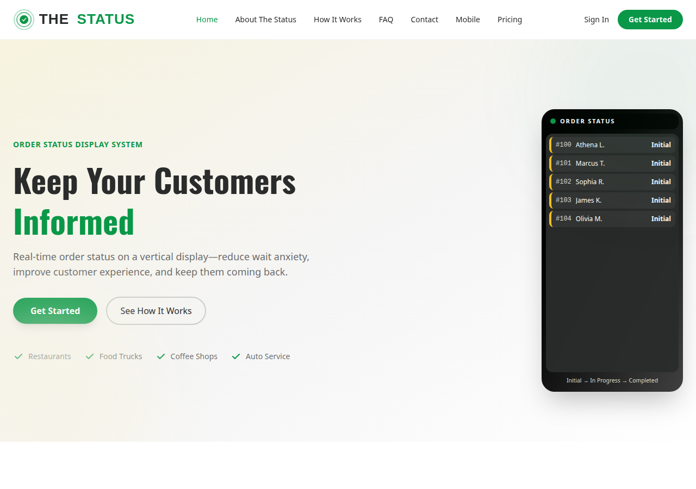
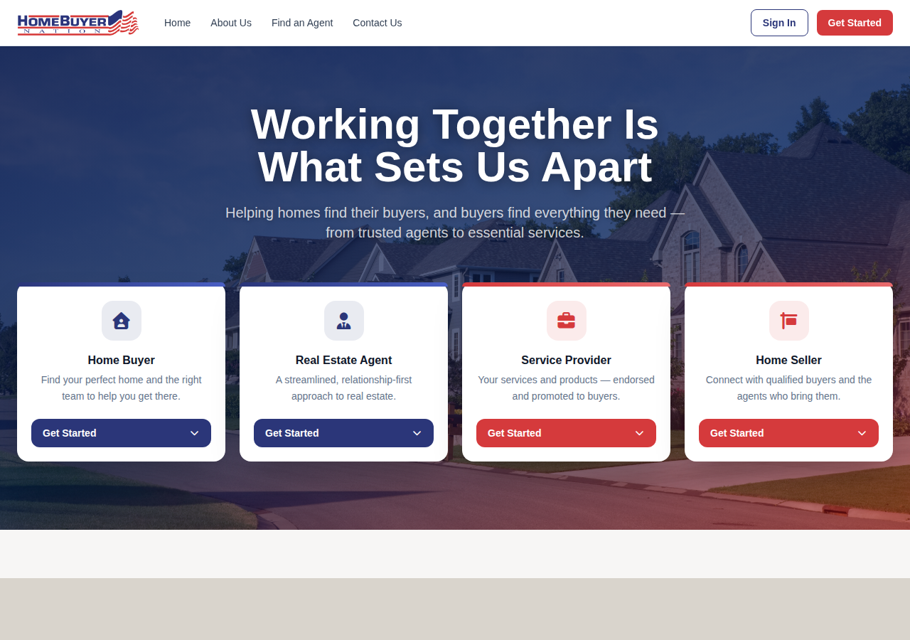
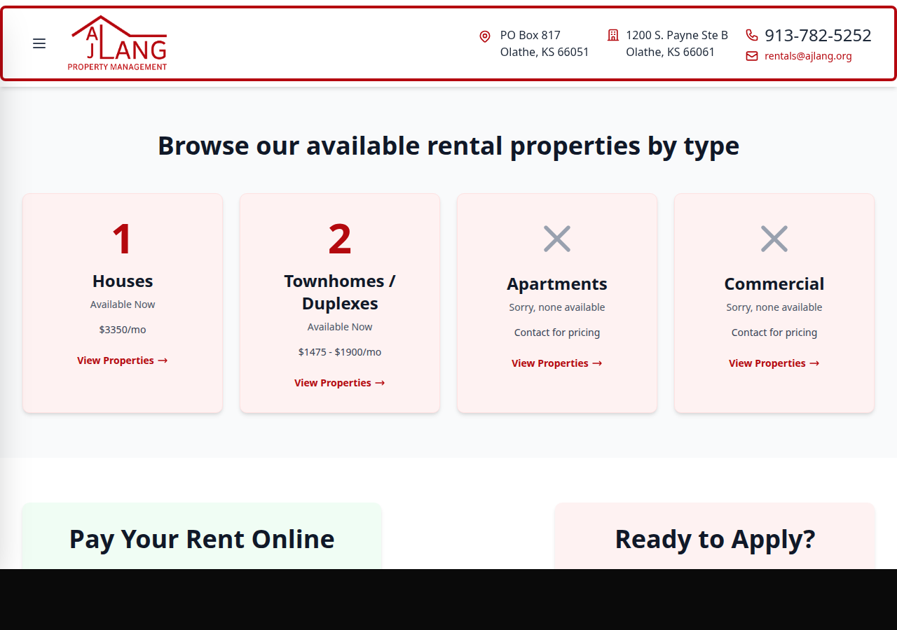
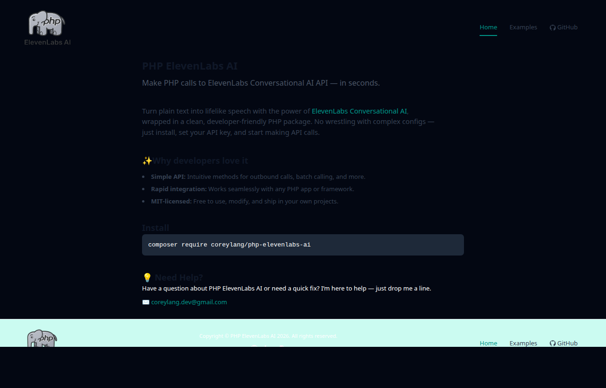
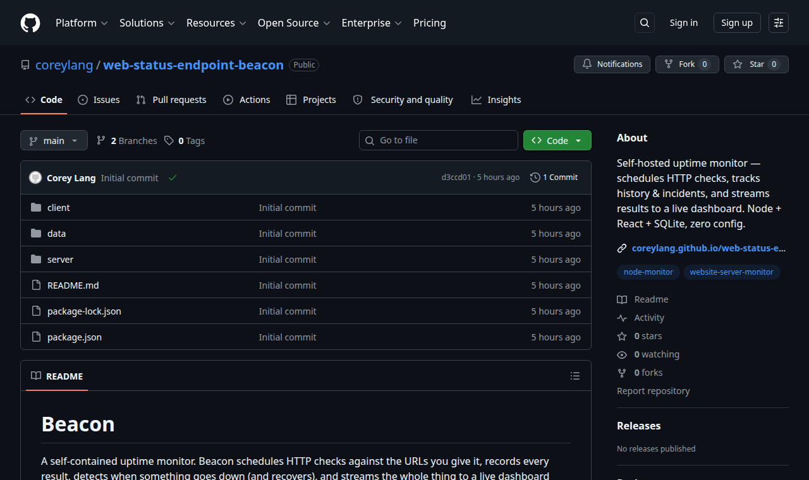
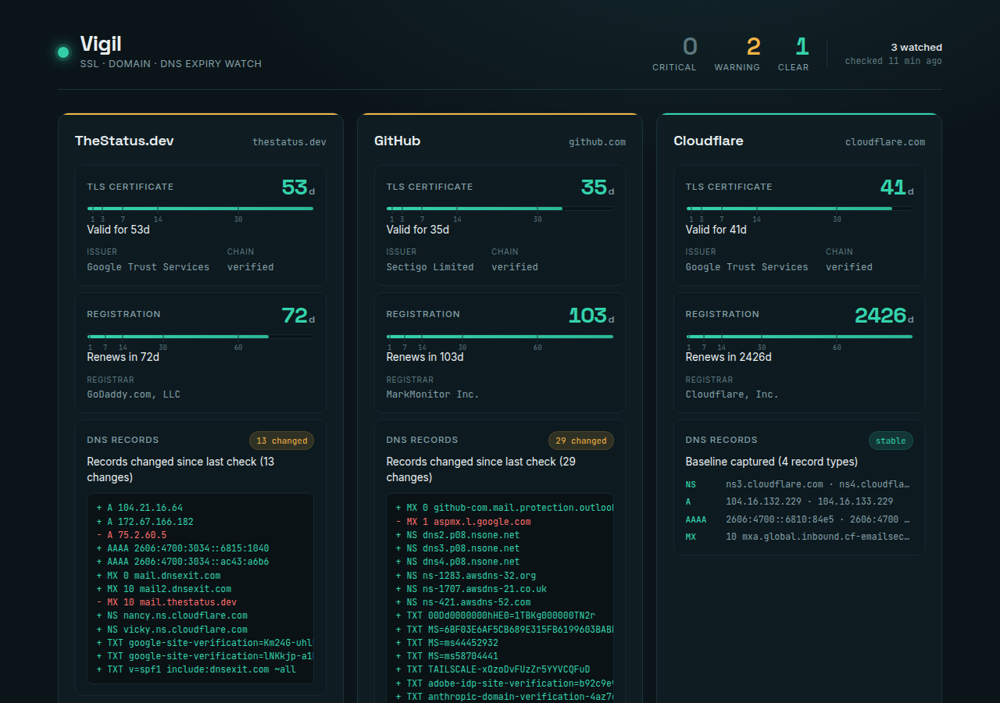
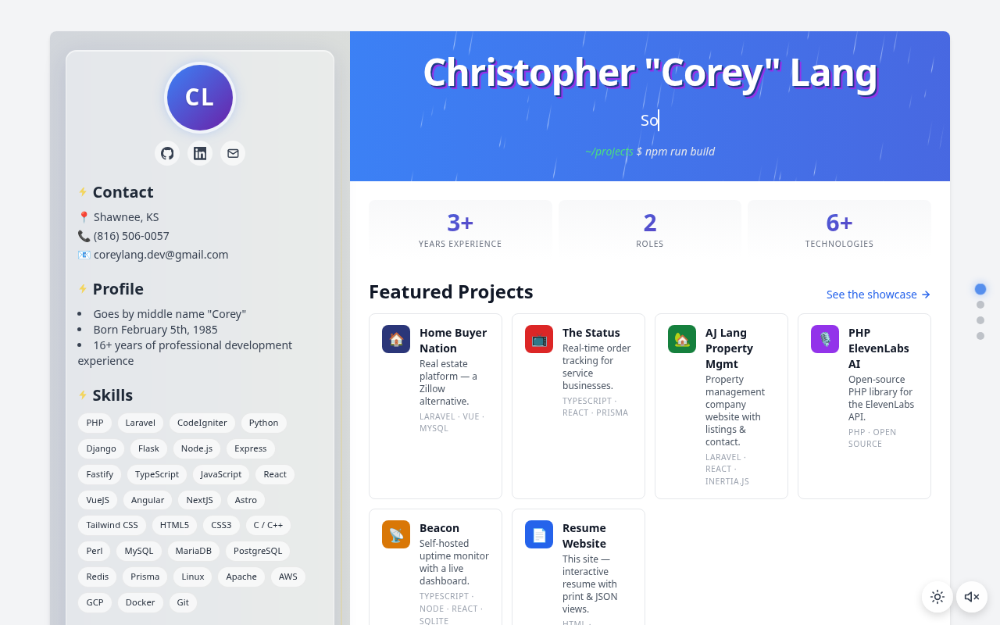

Full-Stack · 2025–2026
The Status
A real-time order-status display for service businesses — restaurants, food trucks, coffee shops, and auto shops. Orders progress live on customer-facing TV monitors, cutting down "is it ready yet?" anxiety.
- Real-time order tracking over WebSockets with polling fallback.
- Three customizable stages: Initial → In Progress → Complete.
- React dashboard (JWT auth) plus a Flutter mobile app, The Status Lite.
- REST API with dual auth — JWT for users, API keys for POS webhooks.

Full-Stack · 2025–Present
Home Buyer Nation
A real estate web application built as an alternative to Zillow — connecting buyers, sellers, agents, and service providers in one platform. My current role.
- Tailored experiences for four audiences: buyers, sellers, agents, and pros.
- Laravel 11 API backing a reactive Vue.js front end.
- Listing search, agent discovery, and account flows.
Personal & Freelance Projects
Side work and open source.

Freelance
AJ Lang Property Management
A property management company website with browsable rental listings by type, online rent payment, and an application flow — built for a real local business.
- Listings grouped by category with live availability and pricing.
- Online rent payment and "ready to apply" entry points.
- Server-driven SPA with Inertia.js bridging Laravel and React.

Open Source · MIT
PHP ElevenLabs AI
An open-source PHP package that wraps the ElevenLabs Conversational AI API in a clean, developer-friendly interface — turn text into lifelike speech without wrestling with configs.
- Intuitive methods for outbound calls, batch calling, and more.
- Drops into any PHP app or framework.
- Installable in one line via Composer.
composer require coreylang/php-elevenlabs-ai
Open Source · MIT
Beacon
A self-contained uptime monitor. Beacon schedules HTTP checks against the URLs you give it, records every result, detects when something goes down (and recovers), and streams the whole thing to a live dashboard over WebSockets — no external services, no API keys.
- Per-monitor scheduler with abort-based timeouts and latency measurement.
- Incident bookkeeping — opens on the first failure, resolves on recovery.
- WebSocket hub sends each client a full snapshot, then live incremental events.
- Zero-config SQLite storage (WAL) — clone and run with two commands.

Open Source · MIT
Vigil
An SSL, domain, and DNS expiry watch that runs entirely on GitHub — no server, no database, no hosting bill. GitHub Actions runs the checks on a schedule, commits the results back to the repo, and a static dashboard is published to GitHub Pages. Where Beacon answers "is it up right now," Vigil answers "is something about to lapse on me in three weeks."
- TLS certificate expiry — plus the case of a cert with valid dates whose chain won't verify.
- Domain registration expiry via RDAP, surfacing EPP status codes like
redemptionPeriod. - DNS drift detection against the previous observation or a pinned baseline.
- Serverless by design — Actions is the backend, committed JSON is the database, Pages is the dashboard.

Personal · Open Source
Resume Website
This very site — a single-file resume that doubles as a playground. One index.html renders an interactive timeline, a clean print layout, and a live JSON export scraped straight from the DOM, all with no build step.
- Plain HTML/CSS/JS with Tailwind via CDN — zero tooling, zero dependencies.
- Interactive timeline, click-to-filter by tech, and dark mode.
- Print-friendly resume and a machine-readable JSON view from one source.
- Deployed continuously on GitHub Pages.